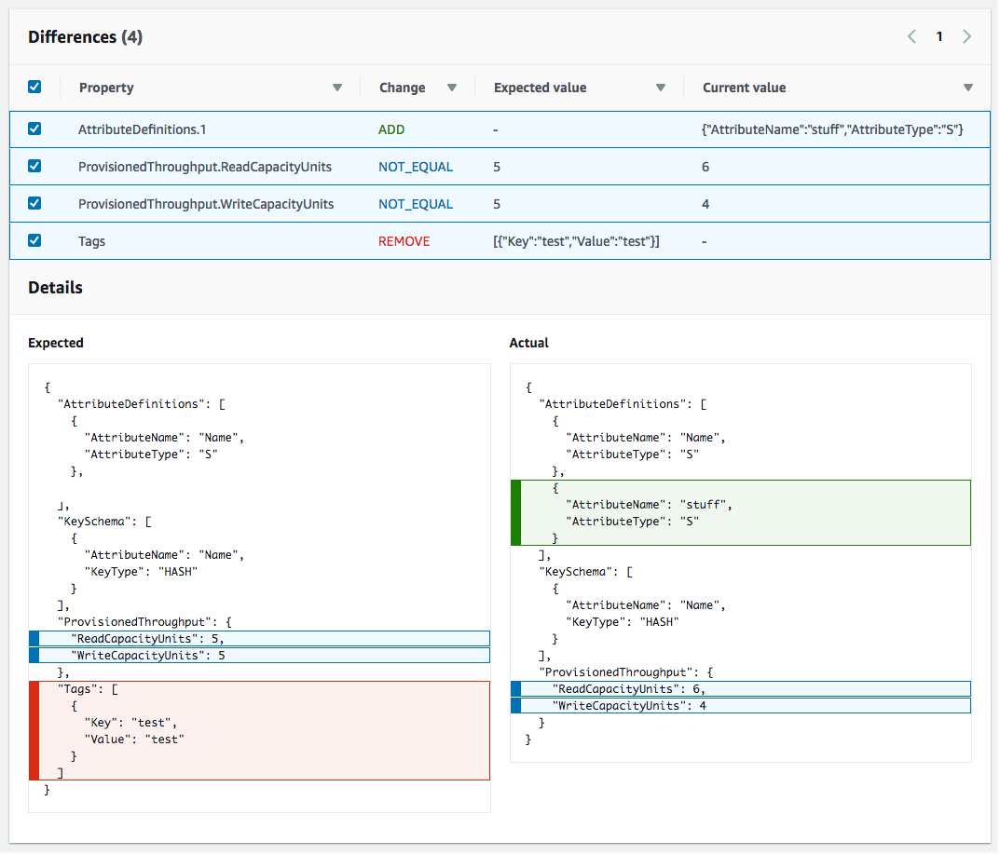

Terjemahan disediakan oleh mesin penerjemah. Jika konten terjemahan yang diberikan bertentangan dengan versi bahasa Inggris aslinya, utamakan versi bahasa Inggris.
Mendeteksi perubahan konfigurasi tidak terkelola dalam set tumpukan
Bahkan saat Anda mengelola tumpukan dan sumber daya yang dikandungnya CloudFormation, pengguna dapat mengubah sumber daya tersebut di luar. CloudFormation Pengguna dapat mengedit sumber daya secara langsung menggunakan layanan pokok yang membuat sumber daya. Dengan melakukan deteksi drift pada set tumpukan, Anda dapat menentukan apakah salah satu instans tumpukan milik set tumpukan tersebut berbeda, atau telah menyimpang, dari konfigurasinya yang diharapkan.
Bagaimana CloudFormation melakukan deteksi drift pada set tumpukan
Saat CloudFormation melakukan deteksi drift pada set tumpukan, ia melakukan deteksi drift pada tumpukan yang terkait dengan setiap instance tumpukan di set tumpukan. Untuk melakukan ini, CloudFormation membandingkan keadaan terkini setiap sumber daya dalam tumpukan dengan perkiraan keadaan sumber daya tersebut, sebagaimana ditetapkan dalam templat tumpukan dan parameter input tertentu. Jika keadaan sumber daya terkini berbeda dari keadaan yang diharapkan, sumber daya tersebut dianggap telah menyimpang. Jika satu atau beberapa sumber daya dalam tumpukan telah menyimpan, maka tumpukan itu sendiri dianggap telah menyimpan, dan instans tumpukan yang terkait dengan tumpukan dianggap telah menyimpang juga. Jika satu atau beberapa instans tumpukan dalam set tumpukan telah menyimpang, tumpukan set itu sendiri dianggap telah menyimpang.
Deteksi drift mengidentifikasi perubahan yang tidak dikelola; yaitu, perubahan yang dilakukan pada tumpukan di luar. CloudFormation Perubahan yang dilakukan melalui CloudFormation tumpukan secara langsung, bukan pada tingkat stack-set, tidak dianggap drift. Misalnya, Anda memiliki tumpukan yang berhubungan dengan instans tumpukan pada suatu set tumpukan. Jika Anda gunakan CloudFormation untuk memperbarui tumpukan itu untuk menggunakan templat yang berbeda, itu tidak dianggap drift, meskipun tumpukan itu sekarang memiliki templat yang berbeda dari tumpukan lain yang termasuk dalam kumpulan tumpukan. Hal ini karena tumpukan masih menyesuaikan templat yang diperkirakannya dan konfigurasi parameter dalam CloudFormation.
Untuk informasi rinci tentang cara CloudFormation melakukan deteksi drift pada tumpukan, lihatMendeteksi perubahan konfigurasi tidak terkelola ke tumpukan dan sumber daya.
Karena CloudFormation melakukan deteksi drift pada setiap tumpukan secara individual, diperlukan nilai parameter yang diganti saat menentukan apakah tumpukan telah melayang. Untuk informasi lebih lanjut tentang menimpa parameter templat dalam instans tumpukan, lihat Timpa parameter pada instans tumpukan.
Jika Anda melakukan deteksi drift secara langsung pada tumpukan yang terkait dengan instance tumpukan, hasil drift tersebut tidak tersedia dari halaman StackSetskonsol.
Untuk mendeteksi penyimpangan pada set tumpukan menggunakan AWS Management Console
Buka AWS CloudFormation konsol di https://console.aws.amazon.com/cloudformation
. -
Pada StackSetshalaman, pilih set tumpukan tempat Anda ingin melakukan deteksi drift.
-
Dari menu Tindakan, pilih Deteksi penyimpangan.
CloudFormation menampilkan bilah informasi yang menyatakan bahwa deteksi drift telah dimulai untuk kumpulan tumpukan yang dipilih.
-
Opsional: Untuk memantau kemajuan operasi deteksi penyimpangan:
-
Pilih nama set tumpukan untuk menampilkan halaman Detail set tumpukan.
-
Pilih tab Operasi, pilih operasi deteksi penyimpangan, lalu pilih Tampilkan detail penyimpangan.
CloudFormation menampilkan kotak dialog Detail operasi.
-
-
Tunggu hingga CloudFormation menyelesaikan operasi deteksi drift. Saat operasi deteksi drift selesai, CloudFormation perbarui status Drift dan waktu pemeriksaan drift terakhir untuk set tumpukan Anda. Bidang ini tercantum di tab Ikhtisar halaman StackSet detail untuk kumpulan tumpukan yang dipilih.
Operasi deteksi penyimpangan mungkin memakan waktu, tergantung pada jumlah instans tumpukan yang termasuk dalam set tumpukan, dan jumlah sumber daya yang termasuk dalam set tumpukan. Anda hanya dapat menjalankan operasi deteksi drift tunggal pada set tumpukan tertentu pada satu waktu. CloudFormation melanjutkan operasi deteksi drift bahkan setelah Anda mengabaikan bilah informasi.
-
Guna meninjau hasil deteksi penyimpangan untuk instans tumpukan dalam set tumpukan, pilih tab Tumpukan.
Kolom Nama tumpukan mencantumkan nama tumpukan yang terkait dengan setiap instans tumpukan, dan kolom Status drift mencantumkan status penyimpangan tumpukan tersebut. Tumpukan dianggap telah menyimpang jika satu atau beberapa sumber dayanya telah menyimpang.
-
Untuk meninjau hasil deteksi drift untuk tumpukan yang terkait dengan instance tumpukan tertentu:
-
Pilih tab Operasi.
-
Pilih operasi drift yang ingin Anda lihat hasil deteksi drift. Panel split akan menampilkan status instance stack dan alasan operasi yang dipilih. Untuk operasi drift, kolom alasan status menunjukkan status drift dari instance tumpukan.
-
Pilih instance tumpukan yang ingin Anda lihat detail drift, dan pilih Lihat drift sumber daya. Dalam tabel status drift Resource pada halaman Resource Drifts, setiap sumber daya tumpukan terdaftar dengan status driftnya dan deteksi drift terakhir kali dimulai pada sumber daya. ID logis dan ID fisik setiap sumber daya ditampilkan untuk membantu Anda mengidentifikasinya.
-
-
Anda dapat mengurutkan sumber daya berdasarkan status penyimpangannya menggunakan kolom Status Penyimpangan.
Untuk melihat detail pada sumber daya yang dimodifikasi:
-
Dengan sumber daya yang dipilih, pilih Lihat detail drift.
CloudFormation menampilkan halaman detail drift untuk sumber daya tertentu. Halaman ini mencantumkan perbedaan sumber daya. Ini juga mencantumkan nilai properti yang diharapkan dan saat ini dari sumber daya.
catatan
Jika tumpukan milik Wilayah dan akun yang berbeda dari yang saat ini Anda masuki, tombol Deteksi drift akan dinonaktifkan dan Anda tidak akan dapat melihat detailnya.
 -
Untuk mendeteksi penyimpangan pada set tumpukan menggunakan AWS CLI
Untuk mendeteksi penyimpangan pada seluruh tumpukan menggunakan AWS CLI, gunakan aws
cloudformation perintah berikut:
-
detect-stack-set-driftuntuk memulai operasi deteksi penyimpangan di tumpukan. -
describe-stack-set-operationuntuk memantau status operasi deteksi penyimpangan tumpukan. -
Setelah operasi deteksi penyimpangan selesai, gunakan perintah berikut untuk mengembalikan informasi penyimpangan yang Anda inginkan:
-
Gunakan
describe-stack-setuntuk mengembalikan informasi terperinci tentang set tumpukan, termasuk informasi terperinci tentang operasi penyimpangan terakhir yang diselesaikan pada set tumpukan. (Informasi tentang operasi penyimpangan yang sedang berlangsung tidak disertakan.) -
Gunakan
list-stack-instancesuntuk mengembalikan daftar instans tumpukan milik set tumpukan, termasuk status penyimpangan dan waktu penyimpangan terakhir yang diperiksa pada setiap instans. -
Gunakan
describe-stack-instanceuntuk mengembalikan informasi terperinci tentang instans tumpukan tertentu, termasuk status penyimpangan dan waktu penyimpangan terakhir diperiksa. -
Gunakan
list-stack-instance-resource-driftsuntuk mengembalikan informasi rinci tentang status drift dari setiap sumber daya dalam instance stack. -
Gunakan
stack-instance-resource-drifts-summaryuntuk mengembalikan informasi ringkasan tentang drift sumber daya untuk instance tumpukan.
-
-
Gunakan
detect-stack-set-driftuntuk mendeteksi penyimpangan pada seluruh set tumpukan dan instans tumpukan yang terkait.Contoh berikut memulai deteksi penyimpangan pada set tumpukan
stack-set-drift-example.$aws cloudformation detect-stack-set-drift \ --stack-set-name stack-set-drift-example{ "OperationId": "c36e44aa-3a83-411a-b503-cb611example" } -
Karena operasi deteksi penyimpangan pada set tumpukan dapat menjadi operasi yang berjalan lama, gunakan
describe-stack-set-operationuntuk memantau status operasi penyimpangan. Perintah ini mengambil ID operasi set tumpukan yang dikembalikan oleh perintahdetect-stack-set-drift.Contoh berikut menggunakan ID operasi dari contoh sebelumnya untuk mengembalikan informasi ke operasi deteksi penyimpangan set tumpukan. Dalam contoh ini, operasi masih berjalan. Dari tujuh instance tumpukan yang terkait dengan kumpulan tumpukan ini, satu instance tumpukan telah ditemukan telah hanyut, dua instance sinkron, dan deteksi drift untuk empat instance tumpukan yang tersisa masih dalam proses. Karena satu instans telah menyimpang, status penyimpangan set tumpukan itu sendiri sekarang adalah
DRIFTED.$aws cloudformation describe-stack-set-operation \ --stack-set-name stack-set-drift-example \ --operation-id c36e44aa-3a83-411a-b503-cb611example{ "StackSetOperation": { "Status": "RUNNING", "AdministrationRoleARN": "arn:aws:iam::123456789012:role/AWSCloudFormationStackSetAdministrationRole", "OperationPreferences": { "RegionOrder": [] }, "ExecutionRoleName": "AWSCloudFormationStackSetExecutionRole", "StackSetDriftDetectionDetails": { "DriftedStackInstancesCount": 1, "TotalStackInstancesCount": 7, "LastDriftCheckTimestamp": "2019-12-04T20:34:28.543Z", "InSyncStackInstancesCount": 2, "InProgressStackInstancesCount": 4, "DriftStatus": "DRIFTED", "FailedStackInstancesCount": 0 }, "Action": "DETECT_DRIFT", "CreationTimestamp": "2019-12-04T20:33:13.673Z", "StackSetId": "stack-set-drift-example:bd1f4017-d4f9-432e-a73f-8c22example", "OperationId": "c36e44aa-3a83-411a-b503-cb611example" } }Melakukan perintah yang sama nanti, contoh ini menunjukkan informasi akan kembali setelah operasi deteksi penyimpangan selesai. Dua dari tujuh instans tumpukan total yang terkait dengan set tumpukan ini telah menyimpang, yang menjadikan status menyimpang pada set tumpukan itu sendiri sebagai
DRIFTED.$aws cloudformation describe-stack-set-operation \ --stack-set-name stack-set-drift-example \ --operation-id c36e44aa-3a83-411a-b503-cb611example{ "StackSetOperation": { "Status": "SUCCEEDED", "AdministrationRoleARN": "arn:aws:iam::123456789012:role/AWSCloudFormationStackSetAdministrationRole", "OperationPreferences": { "RegionOrder": [] } "ExecutionRoleName": "AWSCloudFormationStackSetExecutionRole", "EndTimestamp": "2019-12-04T20:37:32.829Z", "StackSetDriftDetectionDetails": { "DriftedStackInstancesCount": 2, "TotalStackInstancesCount": 7, "LastDriftCheckTimestamp": "2019-12-04T20:36:55.612Z", "InSyncStackInstancesCount": 5, "InProgressStackInstancesCount": 0, "DriftStatus": "DRIFTED", "FailedStackInstancesCount": 0 }, "Action": "DETECT_DRIFT", "CreationTimestamp": "2019-12-04T20:33:13.673Z", "StackSetId": "stack-set-drift-example:bd1f4017-d4f9-432e-a73f-8c22example", "OperationId": "c36e44aa-3a83-411a-b503-cb611example" } } -
Ketika operasi deteksi drift set stack selesai, gunakan
list-stack-instance-resource-driftsperintahdescribe-stack-set,list-stack-instances,describe-stack-instance, dan untuk meninjau hasilnya.Perintah
describe-stack-setmencakup informasi penyimpangan terperinci yang sama yang dikembalikan oleh perintahdescribe-stack-set-operation.$aws cloudformation describe-stack-set \ --stack-set-name stack-set-drift-example{ "StackSet": { "Status": "ACTIVE", "Description": "Demonstration of drift detection on stack sets.", "Parameters": [], "Tags": [ { "Value": "Drift detection", "Key": "Feature" } ], "ExecutionRoleName": "AWSCloudFormationStackSetExecutionRole", "Capabilities": [], "AdministrationRoleARN": "arn:aws:iam::123456789012:role/AWSCloudFormationStackSetAdministrationRole", "StackSetDriftDetectionDetails": { "DriftedStackInstancesCount": 2, "TotalStackInstancesCount": 7, "LastDriftCheckTimestamp": "2019-12-04T20:36:55.612Z", "InProgressStackInstancesCount": 0, "DriftStatus": "DRIFTED", "DriftDetectionStatus": "COMPLETED", "InSyncStackInstancesCount": 5, "FailedStackInstancesCount": 0 }, "StackSetARN": "arn:aws:cloudformation:us-east-1:123456789012:stackset/stack-set-drift-example:bd1f4017-d4f9-432e-a73f-8c22example", "TemplateBody": [details omitted], "StackSetId": "stack-set-drift-example:bd1f4017-d4f9-432e-a73f-8c22ebexample", "StackSetName": "stack-set-drift-example" } }Anda dapat menggunakan perintah
list-stack-instancesuntuk mengembalikan ringkasan informasi tentang tumpukan instans yang terkait dengan set tumpukan, termasuk status drift setiap instans tumpukan.Dalam contoh ini, mengeksekusi
list-stack-instancespada tumpukan contoh yang disetel dengan filter status drift yang disetel untukDRIFTEDmemungkinkan Anda mengidentifikasi dua instance tumpukan mana yang memiliki status drift.DRIFTED$aws cloudformation list-stack-instances \ --stack-set-name stack-set-drift-example \ --filters Name=DRIFT_STATUS,Values=DRIFTED{ "Summaries": [ { "StackId": "arn:aws:cloudformation:eu-west-1:123456789012:stack/StackSet-stack-set-drift-example-b0fb6083-60c0-4e39-af15-2f071e0db90c/0e4f0940-16d4-11ea-93d8-0641cexample", "Status": "CURRENT", "Account": "012345678910", "Region": "eu-west-1", "LastDriftCheckTimestamp": "2019-12-04T20:37:32.687Z", "DriftStatus": "DRIFTED", "StackSetId": "stack-set-drift-example:bd1f4017-d4f9-432e-a73f-8c22eexample "LastOperationId": "c36e44aa-3a83-411a-b503-cb611example" }, { "StackId": "arn:aws:cloudformation:us-east-1:123456789012:stack/StackSet-stack-set-drift-example-b7fde68e-e541-44c2-b33d-ef2e2988071a/008e6030-16d4-11ea-8090-12f89example", "Status": "CURRENT", "Account": "123456789012", "Region": "us-east-1", "LastDriftCheckTimestamp": "2019-12-04T20:34:28.275Z", "DriftStatus": "DRIFTED", "StackSetId": "stack-set-drift-example:bd1f4017-d4f9-432e-a73f-8c22eexample" "LastOperationId": "c36e44aa-3a83-411a-b503-cb611example" }, [additional stack instances omitted] ] }Perintah
describe-stack-instancejuga mengembalikan informasi ini, tetapi untuk instans tumpukan tunggal, seperti dalam contoh di bawah ini.$aws cloudformation describe-stack-instance \ --stack-set-name stack-set-drift-example \ --stack-instance-account 012345678910 --stack-instance-region us-east-1{ "StackInstance": { "StackId": "arn:aws:cloudformation:us-east-1:123456789012:stack/StackSet-stack-set-drift-example-b7fde68e-e541-44c2-b33d-ef2e2988071a/008e6030-16d4-11ea-8090-12f89example", "Status": "CURRENT", "Account": "123456789012", "Region": "us-east-1", "ParameterOverrides": [], "DriftStatus": "DRIFTED", "LastDriftCheckTimestamp": "2019-12-04T20:34:28.275Z", "StackSetId": "stack-set-drift-example:bd1f4017-d4f9-432e-a73f-8c22eexample" "LastOperationId": "c36e44aa-3a83-411a-b503-cb611example" } } -
Setelah Anda mengidentifikasi instance tumpukan mana yang telah melayang, Anda dapat menggunakan informasi tentang instance tumpukan yang dikembalikan oleh
describe-stack-instanceperintahlist-stack-instancesor untuk mengeksekusi -drifts. list-stack-instance-resource Perintah ini mengembalikan informasi rinci tentang sumber daya dalam tumpukan yang telah hanyut untuk operasi drift tertentu.Contoh berikut menggunakan
stack-instance-resource-drift-statusesparameter untuk meminta informasi stack drift untuk sumber daya yang telah dimodifikasi atau dihapus dalam contoh operasi drift sebelumnya. Permintaan mengembalikan informasi pada satu sumber daya yang telah dimodifikasi, termasuk detail tentang dua propertinya dan nilainya yang diubah. Tidak ada sumber daya yang telah dihapus.$aws cloudformation list-stack-instance-resource-drifts \ --stack-set-name my-stack-set-with-resource-drift \ --stack-instance-account 123456789012 \ --stack-instance-region us-east-1 \ --operation-id c36e44aa-3a83-411a-b503-cb611example \ --stack-instance-resource-drift-statuses MODIFIED DELETED{ "Summaries": [ { "StackId": "arn:aws:cloudformation:us-east-1:123456789012:stack/my-stack-set-with-resource-drift/489e5570-df85-11e7-a7d9-50example", "ResourceType": "AWS::SQS::Queue", "Timestamp": "2018-03-26T17:23:34.489Z", "PhysicalResourceId": "https://sqs.us-east-1.amazonaws.com/123456789012/my-stack-with-resource-drift-Queue-494PBHCO76H4", "StackResourceDriftStatus": "MODIFIED", "PropertyDifferences": [ { "PropertyPath": "/DelaySeconds", "ActualValue": "120", "ExpectedValue": "20", "DifferenceType": "NOT_EQUAL" }, { "PropertyPath": "/RedrivePolicy/maxReceiveCount", "ActualValue": "12", "ExpectedValue": "10", "DifferenceType": "NOT_EQUAL" } ], "LogicalResourceId": "Queue" } ] }
Menghentikan deteksi penyimpangan pada set tumpukan
Karena deteksi drift pada set tumpukan dapat menjadi operasi yang berjalan lama, mungkin ada instans ketika Anda ingin menghentikan operasi deteksi drift yang saat ini berjalan pada set tumpukan.
Untuk menghentikan deteksi penyimpangan pada set tumpukan menggunakan AWS Management Console
Buka AWS CloudFormation konsol di https://console.aws.amazon.com/cloudformation
. -
Pada StackSetshalaman, pilih nama set tumpukan.
CloudFormation menampilkan halaman StackSets detail untuk kumpulan tumpukan yang dipilih.
-
Pada halaman StackSets detail, pilih tab Operasi, lalu pilih operasi deteksi drift.
-
Pilih Hentikan operasi.
Untuk menghentikan deteksi penyimpangan pada set tumpukan menggunakan AWS CLI
-
Gunakan perintah
stop-stack-set-operation. Anda harus menyediakan nama set tumpukan dan ID operasi deteksi drift operasi tumpukan set.$aws cloudformation stop-stack-set-operation \ --stack-set-name stack-set-drift-example \ --operation-id 624af370-311a-11e8-b6b7-500cexample